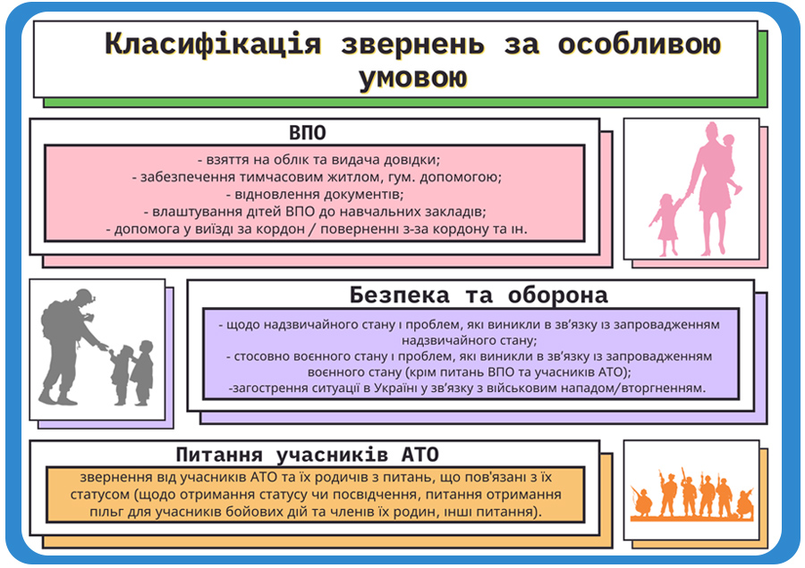
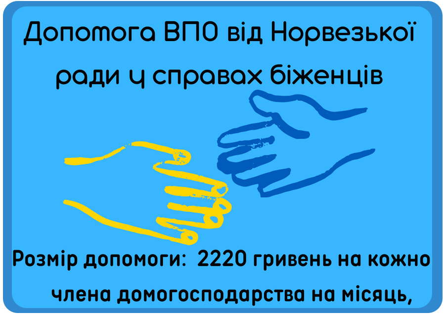
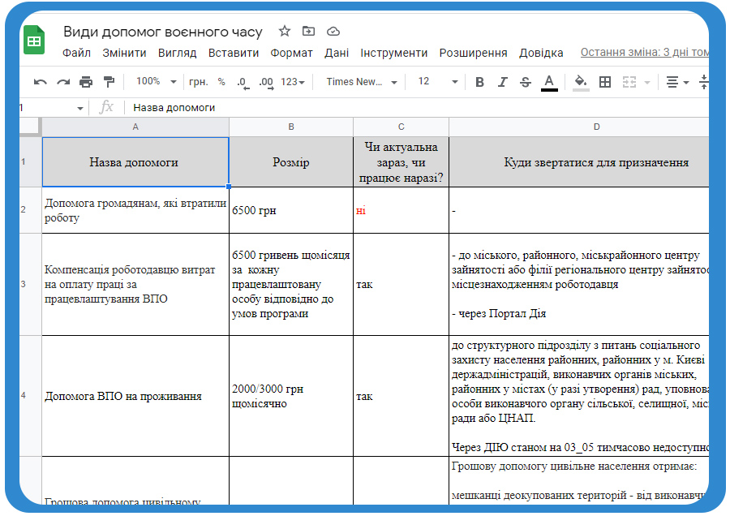
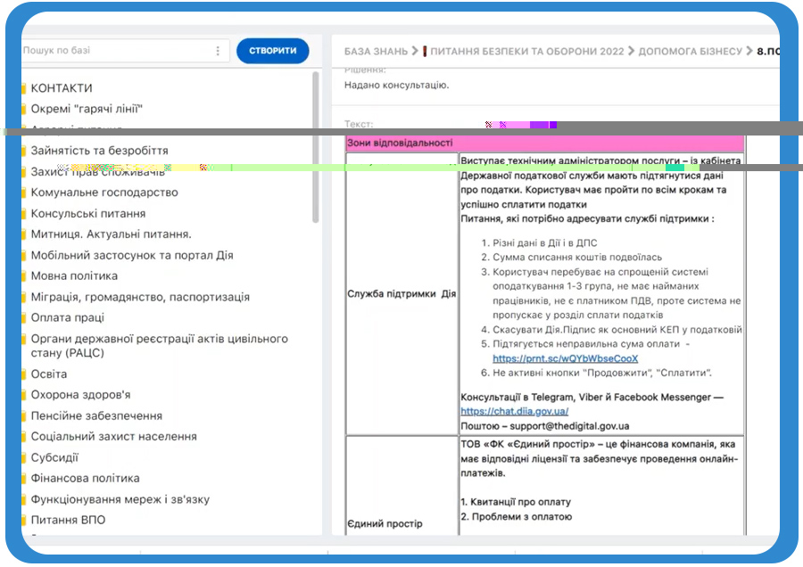
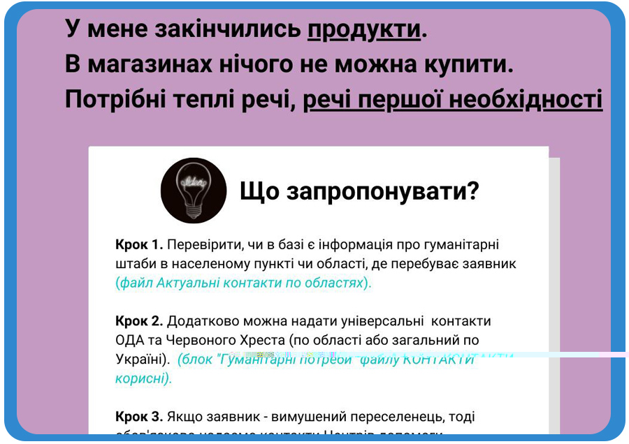
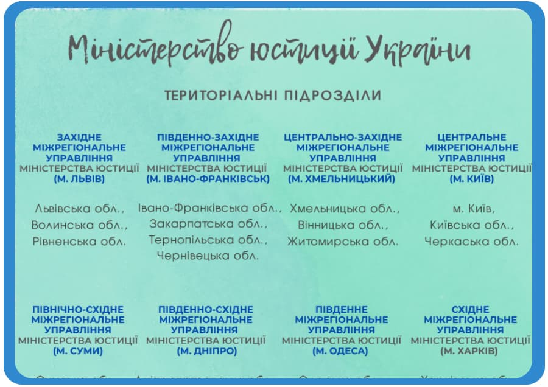

Навчальні та презентаційні матеріали для фахівців 1545
Урядовий контактний центр, 2022 рік
Поточні матеріали
-

Класифікація звернень за особливою умовою
Інфографіка
-

Повноваження митної та прикордонної служби
інфографіка з порівняннями повноважень
-

Допомога ВПО від Норвезької ради
інфографіка про умови отримання допомоги
-

Види допомог воєнного часу
порівняльна онлайн-таблиця
-

Податкові послуги в Дії
відеоогляд консультаційної бази
-

Потреба у гуманітарній допомозі
кейсова підказка
-

Міністерство юстиції України: територіальні підрозділи
кейсова підказка
Внутрішні НПА, затвержені наказами
-
Положення про державну установу «Урядовий контактний центр»
Положення затверджено Наказом директора Господарсько-фінансового департаменту СКМУ від 24 лютого 2020 року № 20
-
Стандарт ведення розмов по телефону
Перелік основних правил спілкування для фахівців, що затверджено наказом Центру № ...від .... 2021 року
-
Стандарт ведення розмови для експертів
Перелік основних правил спілкування для експертів, що затверджено наказом Центру № ...від .... 2021 року
-
Правила професійної етики та поведінки працівників Центру
Сукупність загальних правил повідінки для працівників Центру, затверджені наказом Центру від 15 грудня 2020 року № 146-ОД
-
Посадова інструкція консультанта відділу обробки звернень по телефону
Посадові права та обов'язки фахівця, затверджені наказом Центру від «02» березня 2020 року № 24-ОД
-
ІНСТРУКЦІЯ з опрацювання звернень, що потребують невідкладного реагування державних органів
Для реєстрації та попереднього опрацювання звернень з питань, що стосуються життя та здоров'я заявника
-
Показники розрахункового рейтингу
Показники рейтингування, затверджені наказом Центру від «15» червня 2021 року № 70-ОД
-
Показники розрахункового рейтингу (текст наказу)
Показники рейтингування, затверджені наказом Центру від «15» червня 2021 року № 70-ОД
Навчальні та дидактичні матеріали
-
Довідник "Питання-органи"
Містить класифікатор питань, інформацію про необхідні для розгляду звернень дані, а також про компетенцію органів влади відповідно до тематики звернення
-
Збірка матеріалів для фахівців
Містить інфографіки щодо класифікації звернень та інші правила реєстрації звернень
-
Мовні модулі
Рекомендовані відповіді на поширені питання заявників щодо роботи урядової "гарячої лінії"
Матеріали для новоприйтятих фахівців
-
Підбірка інформації для новоприйнятих фахівців
Збірка матеріалів Містить класифікатор питань, інформацію про необхідні для розгляду звернень дані, а також про компетенцію органів влади відповідно до тематики звернення
-
Схема безперервного навчання
Інформація про систему навчання та тестування, що здійснюється безперервно
-
Абревіатури назв органів влади та їх підрозділів
Скорочення назв ОВВ
-
Звернення VS Запит на публічну інформацію
Відмінність запиту на публічну інформацію від звернень громадян
Нормативно-правові акти з питань звернень громадян і роботи Центру
- Закон України «Про звернення громадян» від 2 жовтня 1996 року № 393/96-ВР
- Закон України «Про доступ до публічної інформації» від 13 січня 2011 року № 2939-VI
- Закон України «Про інформацію» від 2 жовтня 1992 року № 2657-XII
- Закон України «Про захист персональних даних» від 1 червня 2010 року № 2297-VI
- Постанова Кабінету Міністрів України від 27 листопада 2019 року № 976 «Деякі питання Єдиної системи опрацювання звернень»
- Постанова Кабінету Міністрів України від 27 листопада 2019 року № 972 «Про реалізацію експериментального проекту із створення “єдиного входу” опрацювання звернень громадян та запитів на публічну інформацію»
- Постанова Кабінету Міністрів України від 5 лютого 2020 року № 91 «Деякі питання державної установи «Урядовий контактний центр»
- Постанова Кабінету Міністрів України від 10 вересня 2014 року № 442 «Про оптимізацію системи центральних органів виконавчої влади»